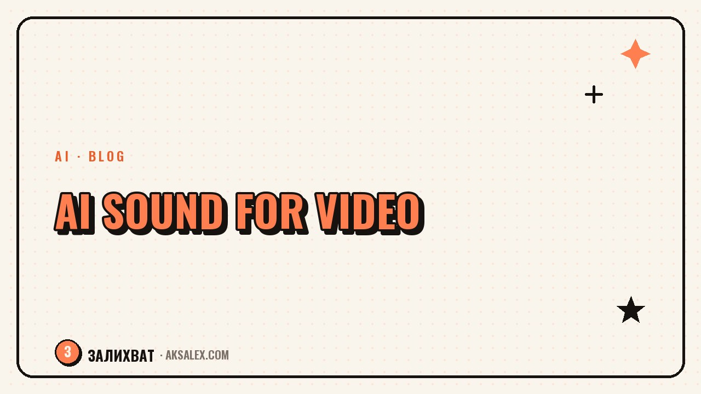

AI for Music and Sound in Your Videos

Why sound decides a video's fate
Viewers forgive imperfect visuals, but they rarely forgive bad sound: echo, noise, or a muffled voice makes them close the video within seconds. Meanwhile, good music sets the mood and rhythm, and a clean voice builds trust. Sound is half the impression, though it's often overlooked.
Quality sound used to require a studio, a microphone, and mixing skills. Now AI handles most of it: it generates music with no rights issues, synthesizes voice, and cleans up recordings. The barrier to good sound has dropped almost to zero.
People turn off bad sound faster than bad video. A clean voice and fitting music hold a viewer just as well as the picture.
Which sound tasks AI covers
AI works with sound on several levels. Let's break it down by task so it's clear what to use and when.
| Task | What the AI does | Why |
|---|---|---|
| Background music | Generates a track from a description | No rights issues |
| Voiceover for text | Synthesizes an off-screen voice | A video without recording yourself |
| Sound cleanup | Removes noise and echo | A clean voice without a studio |
| Sound effects | Creates the sounds you need | Accents and dynamics |
| Voiceover translation | Voice in another language | Reaching a new audience |
Music generation is especially valuable: it removes the risk of a block over someone else's track and gives you a sound perfectly matched to the video's mood. And voice synthesis rescues those who don't want to, or are shy about, recording themselves.
Music with no rights issues
Someone else's popular track is a common reason videos get restricted or blocked. AI generates music from a description: you set the genre, tempo, and mood and get a unique track that belongs to you and raises no rights claims.
How to describe the track you want
- Mood: upbeat, calm, dramatic, cozy.
- Tempo: slow for lyrical moments, fast for dynamic ones.
- Genre: lo-fi, electronic, acoustic, ambient.
- Length and structure: to fit the video's runtime.
Match the music to the edit's rhythm, not the other way around: the track's tempo should line up with the pace of the cuts. Then the music isn't background but part of the dynamic that holds attention along with the picture.
Voiceover and cleaning up your voice
Speech synthesis has come to sound natural, and it's a lifesaver for faceless formats and for the shy. You write the text, pick a voice, and get an off-screen voiceover without recording yourself. It's a fit for tutorials, roundups, and how-tos.
If the voice is still your own, AI cleans up the recording: removes noise and echo, evens out the volume. This turns a phone recording made in the kitchen into clean, studio-like sound. A good rule is to record in a quiet place and leave the small flaws to AI cleanup.
Mistakes and limits of AI sound
The first mistake is loud music over the voice: the background should be quieter than the speech, or the words drown. The second is a synthesized voice with no emotion where live intonation is needed: for personal stories your own voice is still warmer than a machine's.
The third mistake is not checking generated music for monotony: a track shouldn't get tiresome within fifteen seconds. The fourth is forgetting that sound matters: people pour effort into the picture and leave the sound for last. Give sound as much attention as the video, and your watch-through rate will climb.
Frequently Asked Questions
Can you use AI-generated music without risk of a block?
Yes, that's its main advantage. A generated track is unique and raises no copyright claims, unlike someone else's popular music, which often gets a video restricted.
Does a synthesized voice sound natural?
Modern speech synthesis sounds confident and suits tutorials, roundups, and faceless formats. For personal stories your own voice is still warmer - live intonation matters more there.
How does AI help with a bad audio recording?
It removes noise and echo and evens out the volume. A phone recording made in an ordinary room can be brought to clean sound. Record in a quiet place and leave the small flaws to the cleanup.
How do you pick music for a video?
Describe the mood, tempo, and genre to the AI to match the video's content, then fit the track to the edit's rhythm. The music's tempo should line up with the pace of the cuts - then it keeps the dynamic going.
How important is sound in a short video?
Very. People turn off bad sound faster than a bad picture. Keep the music quieter than the voice, watch the recording quality, and give sound as much attention as the video - it raises your watch-through rate.
Enjoyed this one? Here's what to read next. We break down profile setup step by step: the avatar, bio, description and pinned posts that turn a visitor into a follower.
Read the article →not by hand